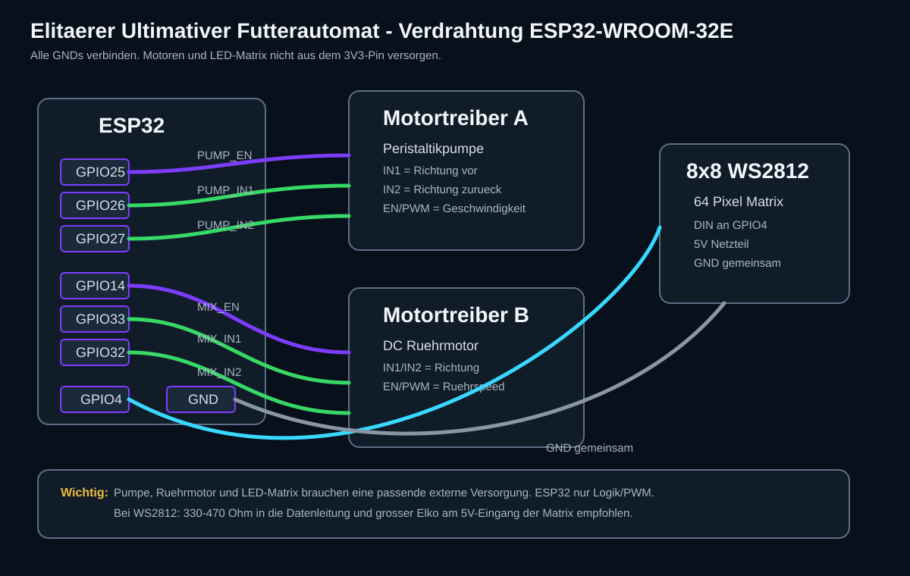
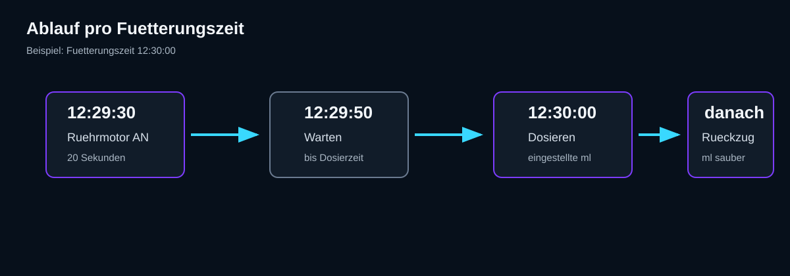

Futterautomat Vita - Bauanleitung
Verdrahtung

Ablauf pro Fuetterung

- 30 Sekunden vor der eingestellten Zeit startet der DC-Ruehrmotor.
- Der Ruehrmotor laeuft 20 Sekunden.
- Zur Fuetterungszeit dosiert die Peristaltikpumpe die eingestellte Menge.
- Danach zieht die Pumpe die eingestellte Rueckzugsmenge zurueck.
Bauteile
- ESP32-WROOM-32E Dev Board
- Peristaltikpumpe mit DC-Motor
- DC-Ruehrmotor
- 2 Motortreiber-Kanaele, z. B. TB6612FNG, L298N oder DRV8833
- 8x8 WS2812 LED-Matrix mit 64 LEDs
- Externes Netzteil passend zu Motoren und LED-Matrix
- Schlaeuche, Rueckschlagventil und gemeinsamer GND
Pinbelegung
| Funktion | ESP32 Pin | Anschluss |
|---|---|---|
| Pumpe PWM / Enable | GPIO25 | EN/PWM am Pumpen-Motortreiber |
| Pumpe Richtung 1 | GPIO26 | IN1 am Pumpen-Motortreiber |
| Pumpe Richtung 2 | GPIO27 | IN2 am Pumpen-Motortreiber |
| Ruehrmotor PWM / Enable | GPIO14 | EN/PWM am Ruehrmotor-Motortreiber |
| Ruehrmotor Richtung 1 | GPIO33 | IN1 am Ruehrmotor-Motortreiber |
| Ruehrmotor Richtung 2 | GPIO32 | IN2 am Ruehrmotor-Motortreiber |
| WS2812 Datenleitung | GPIO4 | DIN der 8x8 Matrix |
| Masse | GND | GND von Netzteil, Treibern, LED-Matrix und ESP32 verbinden |
Kalibrierung
Foerdere eine bekannte Zeit und miss die Menge. Danach berechnest du:
mlPerSec = gemessene_ml / sekundenBeispiel: 25 ml in 10 Sekunden = 2.5 ml/s.
GitHub Pages
- Repository auf GitHub oeffnen.
Settings->Pages.- Source:
Deploy from a branch. - Branch:
main, Folder:/docs. - Speichern und die angezeigte Pages-URL oeffnen.